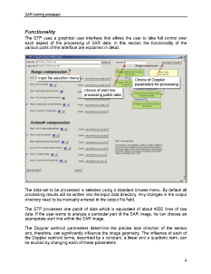
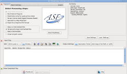
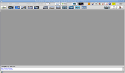
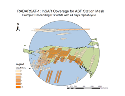
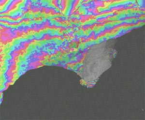
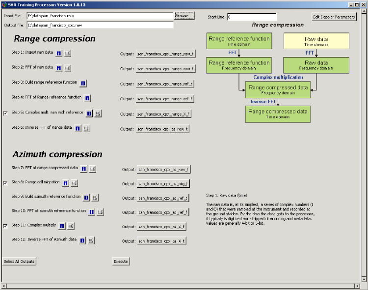

The documentation of software is often the most neglected part of any software development. Once it is in place it is quite a time saver but it takes a while to get there. I have spent a considerable amount of time to develop documentation for the ASF software tools.
The documents that I generated, some along with Tom Logan, are listed below.
 I am involved in the development of MapReady from its inception. My main areas of expertise in MapReady are in
We have came a long way with the graphical user interface. However, the command line tools offer even more functionality.
The latest version of MapReady can be downloaded here.
 I collaborated with Eric Pottier to develop an interface that integrates PolSARPro's polarimetric processing capabilities with MapReady's functionality for terrain correcting and geocoding SAR data.
We published an article that analyzes the alternative processing flows that are available with the integration of the two software packages.
 I developed the prototype of catalog for Radarsat interferometric baselines. The baseline catalog allows InSAR users to determine suitable InSAR image pairs for their particular applications without having to actually process the data sets first. This is a huge time saver, especially for projects that deal with large data volumes.
I published an article that provides more details about the catalog:
This project laid the foundation for many of the latest ASF software tool developments.
The SAR interferometric processing flow is rather complex and involves quite a number of steps. Originally, the software had been written in a modular fashion so that each processing step was performed by a separate tool. A fair number of tools were still implemented as scripts. The processing flow was realized by running the individual tools in sequence in a simple Unix script. This approach obviously had its limitations in terms of error handling and complexity of processing scenarios. In a transition period, we converted all the scripts into C programs. Only the script that controlled the entire processing remained in place.
The key to a vastly improved handling of the processing flow was the development of a driver program that replaced the processing flow script. As part of the driver program I implemented reporting scheme that allowed us to keep all relevant processing information in a log file. This is still the most valuable piece of information for troubleshooting processing issues. The other important feature of the driver program is the fact that it entirely runs from a configuration file. This avoids any major user interaction via the command line and allows for a high level of automation.
We have adopted this configuration file concept for the development of the asf_convert tool. It greatly simplified the implementation of a graphical user interface on top of convert tool.
The SAR training processor is one of the projects I was very interested in. SAR processing complex, not straight forward to follow and, therefore, challenging to teach. Often, training tools have limitations in the size of the data sets they can handle or do not have the full functionality of the actual tool. Our main goal was to develop a SAR training processor that does not have these kind of limitations but still explains in sufficient detail how SAR processing works.
What we ended up doing was to extend the debugging mode of our range Doppler processor so that all the intermediate results can be stored and each of main processing steps can be manipulated. A graphical user interface helped to explain the details of the processing flow and runs the processor with all the required debug options in a simple, for the user completely transparent fashion.
I have used the STP extensively in my classes and the feedback from the students has helped us to further improve the interface.